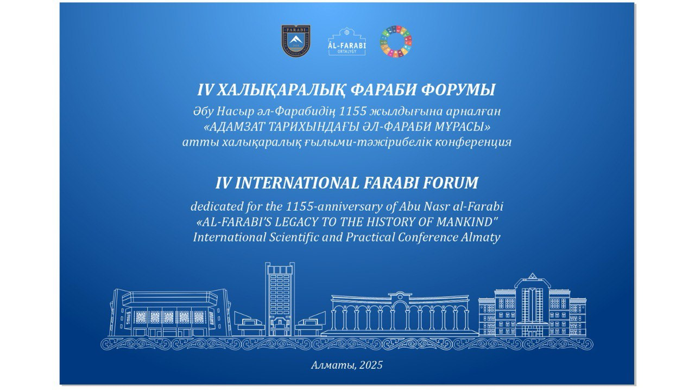

Международная научно-практическая конференция
«НАСЛЕДИЕ АЛЬ-ФАРАБИ В ИСТОРИИ ЧЕЛОВЕЧЕСТВА»
2 апреля, Научная библиотека аль-Фараби, конференц-зал №409
- 10:00 - 10:30 Встреча гостей и участников форума, регистрация.
- 10:30 - 11:00 Знакомство с музеем аль-Фараби, Книжная выставка «Наследие аль-Фараби»
- 11:00 - 14:00 ПЛЕНАРНОЕ ЗАСЕДАНИЕ
- 11:00 - 12:05 Вступительное слово, поздравления и пожелания гостей
- 11.00 - 11.10 Түймебаев Жансейіт Қансейітұлы
- 11.10 - 11.15 Айхан Коркмаз
- 11.15 - 11.20 Салих Албдах
- 11.20 - 11.25 Хосейн Ағазаде
- 11.25 - 11.30 Самир Дерех
- 11.30 - 11.35 Ахмед Хусейн Мұхаммед Ибрахим
- 11.35 - 11.40 Ғабитов Тұрсын Хафизұлы
- 11.40 - 11.45 Шуайбу Умар Гокару
- 11.45 - 11.50 Адем Чилек
- 11.50 - 11.55 Роберто Болтри
- 11.55 - 12.00 Саралаев Нур Керимкулович
- 12.00 - 12.05 Альберт Фишлер
- 12:05 - 12:10 Презентация книг, посвященных 1155-летию Абу Насра аль-Фараби
- 12:10 - 14:00 ПЛЕНАРНЫЕ ДОКЛАДЫ
- 12.10 - 12.20 Алтаев Жақыпбек Алтайұлы Методологические проблемы формирования школы фарабиеведения
- 12.20 - 12.30 Қирабаев Нұр Серікұлы Метаморфозы античной философии в арабско-мусульманской культуре и философии: аль-Фараби и Ибн Сина
- 12.30 - 12.40 Сейтахметова Наталья Львовна Философия как научный и образовательный проект в творчестве Абу Насра аль-Фараби
- 12.40 - 12.50 Төлеубаева Самал Абайқызы Формирование философского словаря альФараби: восточная и западная перспективы.
- 12.50 - 13.00 Шермухамедова Нигинахон Арслановна Актуальность идеи аль-Фараби в современном обществе Узбекистана
- 13.00 - 14.00 Памятное фото, Перерыв
- 14:00, №408 Секция №1. Аль-Фараби и диалог культур
- 14:00, №303 Секция №2. Аль-Фараби и Абай: гармония духовного наследия
- 16:00, №303 Секция №3. Аль-Фараби и современность: общество, этика и наука
- 3 сәуір, 14:00, №408 Секция №4. Аль-Фараби и исламская философия: традиции и новаторство
- 3 сәуір, 16:00, №408 Секция №5. Интеллектуальное и духовное развитие в тюркском мире: роль и значение аль-Фараби
- 3 сәуір, 17:00, №408 Принятие резолюции конференции. Закрытие конференции.
Секция №1. АЛЬ-ФАРАБИ И ДИАЛОГ КУЛЬТУР
Модератор: Рамазанова Әлия Хайруллақызы, Секретарь: Бекенова Жұмагүл Нұрдәулетқызы
- Азизкулов А.А. Критика Абиль-Хасана аль-Омари учения аль-Фараби
- Байтенова Н., Сәмет Байжұма, Мейірбаев Б., Балтымова М. Суфийская философия Руми в глобальных духовных поисках и развитии
- Джин Сяоган, Алчимбаева А.Б. Влияние психологических идей аль-Фараби на современную межкультурную коммуникацию
- Джуншеев Р.Е. Этика аль-Фараби и проблемы ценностей в эпоху глобализации
- Жакупбекова Д. Деколониальная эпистемология учимся «учиться заново» у Аль-Фараби
- Илмуродова Ф.Ш. Философские размышления и взгляды в научном наследии аль-Фараби
- Калишева Н.Х., Жолмұхамедова Н.Х. Гуманистический потенциал политической философии Абу Насра аль-Фараби
- Нұрышева Г.Ж. Идеал образования в казахском просвещении
- Мустафаева А.А. Использование некоторых грамматических терминов арабского языка Абу Насром аль-Фараби и Абу Бакром Ибн Ас-Сарраджем
- Тайжанов А.Т. Духовно-историческая и мировоззренческая преемственность мыслителей Великой степи
- Сатершинов Б.М. Учение аль-Фараби о формировании справедливого общества и устойчивом развитии
- Саматов Х.Ұ. Взгляды Абу Насра Аль-Фараби на суфизм
- Шуайбу Умар Гокару. Влияние аль-Фараби на перевод: интеллектуальная перспектива
- Шаропов У.Ш. Проблемы общества и личности в научном наследии аль-Фараби
- Умарова Р.Ш. Абу Наср аль-Фараби — основатель восточного перипатетизма
- Хаккулов Н.К. Проблемы повышения культурного и философского мышления в современном мире
- Юсубов Ж.К. Необходимость использования наследия Абу Насра аль-Фараби в воспитании личной духовной нравственности
Секция №2. Аль-Фараби и Абай: созвучие духовного наследия
Модераторлар: Аташ Б.М., Хаккулов Н.К.,
Секретарь: Нигметова А.Т.
- Аташ Б.М. Пропозиции в структуре десигнат-денотат: критическая экспликация и деконструкция
- Алтынбек К.М. Духовные корни в творчестве Аль-Фараби и Абая
- Аман А.С. Целостность воспитания и образования для Аль-Фараби главный ключ к счастью
- Бакытжанова А.А., Алимбекова Г.Т. Роль науки и образования в жизни молодежи: наследие Аль-Фараби через объектив социологии образования
- Бахытжан А.Б. Аль-Фараби о риторике и искусстве убеждения: роль культуры речи в снижении стресса у преподавателей
- Беркинов О.Т. Комплексный анализ творчества Абу Насра Аль-Фараби как целостной системы
- Дүйсенбаев А.Қ., Балтымова М.Р. Воспитательные уроки в наследии Аль-Фараби
- Дабикова Ж.С. Вклад Абу Насра Аль-Фараби в образование и воспитание
- Ильин А.Г. Интериоризация толерантности в современном обществе через призму мудрости
- Қожан А.Ә., Сәмбетов Ж.Т. Проблемы и перспективы современного научно-философского изучения наследия Аль-Фараби
- Курултаев А.К., Исмаилов К.К. Аль-Фараби о роли личности в развитии общества
- Молтобарова К.И. Размышления в контексте созвучия идей Аль-Фараби и Абая
- Мырзалы С.К., Сырбаев Е.У. Улучшение духовной жизни залог дальнейшей модернизации общества
- Норбоева Д.А., Гаффарова Г.Г. Вопросы семьи и образования в учении Аль-Фараби
- Нургалиев К.Т. Знание и наука основа мировоззрения Абая
- Насибулина В.А. Предел идеала: добродетели, этика и свобода в философии Аль-Фараби
- Сариева Э.М. Этические ценности и их роль в преодолении кризиса идентичности среднего возраста: интеграция идей Аль-Фараби
- Сапарбаев Т. Воспитательное наследие Аль-Фараби
- Юлдашева Б.М. Единство психологии и философии в учениях Фараби
Секция №3. АЛЬ-ФАРАБИ И СОВРЕМЕННОСТЬ: ОБЩЕСТВО, ЭТИКА И НАУКА
Модератор: Телебаев Ғ.Т., Секретарь: Құдайбергенова Н.Ж.
- Айдарбеков З.С., Хамдамов И.А. Моральный императив молодежи и культурная социализация в современном мире
- Асқар Л.Ә., Пернебекова Д.П. Поворот к научному познанию в истории культуры мышления и его направления
- Айытбаева Г., Шамшадин К. Цифровизация ДУМК: распространение ислама через современные технологии
- Абдуллаев Е., Шәмшат Ә. Социально-воспитательное значение хадисов Пророка, начинающихся с фразы «(… не из нас)»
- Бектуганов А., Мухитдинов Р.С. Аль-Фараби и место людей с особыми потребностями в обществе
- Каусов М., Адилбаева Ш.А. Психологические последствия бытового насилия: взгляд через призму ислама
- Баяхметова Д., Избаиров А.К. Средства массовой информации советского периода и сфера распространения информации
- Бекенова Ж.Н. Экзистенциальное значение проявлений виртуальной реальности в тенденциях информатизации современного общества
- Гаффарова Г.Г. Вопрос справедливости в рассуждениях Аль-Фараби
- Галеева Р., Булатбаева А.А. Исследование академического стресса среди школьников г. Алматы
- Елубаев Б.Қ. Классические и современные теории концепции общественного согласия
- Ерланқызы Е. Гендерные различия в выборе профессии: почему женщины выбирают заботливые, а не высокооплачиваемые сферы
- Йулдошев А.А. Разум и искусственный интеллект: классификация наук Аль-Фараби
- Қошқарбаев Е.Е. Казахские и зарубежные фарабитоведы
- Құдайбергенова Н.Ж. Философия образования Аль-Фараби: значение в современном обществе
- Көпбаева Ш., Шәмшат Ә. Особенности образа женщины в исламе
- Лифанова Т.Ю. Этика, добродетель, виртуальность
- Лифанова Т.Ю., Веревкин А.В. Духовность/религиозность в общественном сознании: концептуализация понятий
- Мейманхожа Н.Р. Некоторые аспекты согласования парадигмы справедливого общества с религиозными и светскими ценностями (Казахстанский опыт)
- Махсұтова А.А. Способы укрепления социальной роли цифровых технологий в обществе
- Оспан Д., Кеңшілік Т. Факторы, повлиявшие на формирование философии Абу Насра аль-Фараби
- Орынбасар А.Қ. Политическая элита и направление развития Казахстана
- Олжаева А.К. Формирование национальных ценностей казахстанских подростков через внеклассную работу в школе
- Пазылов Т.А. Педагогическое наследие Аль-Фараби и его влияние на современное образование
- Рамазанова А.Х. Философия Аль-Фараби и современная наука
- Сиу Си Влияние проектного мышления на профессиональное развитие учителей
- Хуатберген К. Религиозный аспект в национальной одежде казахских женщин и его современные проявления
- Шакирова А.Д. Упрощение оценки результатов повышения квалификации учителей по внедрению инноваций в преподавании
- Шанбаева Г.Н. Теоретические подходы к анализу супервизии как эффективной практики
Секция №4. АЛЬ-ФАРАБИ И ИСЛАМСКАЯ ФИЛОСОФИЯ: ТРАДИЦИИ И ИННОВАЦИИ
Модератор: Қошқарбаев Ерболат Еркінұлы, Секретарь: Қазиева Жадыра Нұрғанатқызы
- Амиреев Б., С. Оқан Место мурсаль-хадиса в ханафитском мазхабе
- Ашилов М.С., Бегалинова К.К., Бегалинов А.С. Проблемы исмаилизма
- Абдраш Н., Адильбаева Ш. Значение наставлений Пророка (с.ғ.с) в воспитании мусульманской личности
- Бегалинова К.К., Ашилова М.С., Бегалинов А.С. Средневековая исламская философия: круг проблем
- Бегимбет Н., Мухитдинов Р.С. Оправдание (прощение) за невежество в вопросах веры
- Василей М., Альмухаметов А.Р., Хамзеева Б. Религиозность в исламе и ее типы
- Гажап Ж., Адильбаева Ш. Поклонение и воспитание нравственности
- Ергалиева А., Затов К.А. Запреты и дозволенности в питании в исламе в трактате «Мәида» М. Бигиева
- Едильбаева С.Ж., Омаров С.А. Историко-философская концепция М.Х. Дулати
- Эргашева Ю.А., Бегалинова К.К. Ислам в жизни народов Средней Азии
- Жумагалиева М., Куранбек А.А. Суфизм в религиозной интерпретации Мухаммада Икбала
- Иманбаева Ж.М. Учение аль-Фараби о диалектическом искусстве
- Ильясова А., Акимханов А.Б. Теологическая концепция имама Матуриди о понятии зла в жизни человека
- Кадирбайулы Е., Шамшат А. Роль пожилых людей в обществе с точки зрения ислама
- Колганатова С.Б. Взгляды аль-Фараби на язык и культуру речи
- Кулар Т., Рыскиева А.А. Основы веры международного общественного движения Аллатра
- Лиров И., Анарбаев Н.С. Цель справедливости в муамалятских предписаниях ханафитского мазхаба и их применение
- Макан А., С. Окан Понимание понятий смерти и жизни в стиле Корана
- Маратулы С., Алпысбаев Е.О. Роль разума в понимании шариатского блага («маслаха»)
- Пиримкулов М., Адильбаев А., Утпинов Н. Тасахул (снисходительность) в науке джарх-та’диля и мутасаһиль-учёные
- Мусабеков А., Избаиров А.К. Методы деструктивных религиозных течений в киберпространстве
- Рахматулла М., Имаммади Т. Святые места региона Кызылорда: религиозно-культурное наследие и духовные ценности
- Рахметулла Н., Имаммади Т. Сравнительный анализ описания пророка и царя Сулеймана в Священном Писании и Коране
- Тореханов М., Исахан М.Б. Древняя тюркская вера в Тенгри и брак в исламе: сходства и различия
- Юбуров Р., Анарбаев Н.С. Аяты Корана о Вселенной и звёздах (объективное исследование)
Секция №5. ИНТЕЛЛЕКТУАЛЬНОЕ И ДУХОВНОЕ РАЗВИТИЕ В ТЮРКСКОМ МИРЕ: РОЛЬ И ЗНАЧЕНИЕ АЛЬ-ФАРАБИ
Модератор: Ғабитов Тұрсын Хафизұлы, Секретарь: Зейнуллин Раймбек Бақытжанұлы
- Алейников М.В. Проблема счастья в этико-философских воззрениях аль-Фараби
- Аскар Л.А. Учение о логике в наследии Ибн Сины
- Амребаева Ж.Т. «Кутадгу билиг» и персидская литературная традиция
- Габитов Т.Х. Философия аль-Фараби в широком контексте тюрко-исламского Ренессанса
- Ганиева Ч. Взгляды Абу Насра аль-Фараби на семью
- Базарәлі А.Б. Машхур Жусип Копеулы как представитель накшбандийского тариката на Казахской степи
- Кошанова Н.М. Человек в духовно-этическом учении аль-Фараби: проблема совершенства
- Кандов Б.М. Роль и значение философских воззрений Абу Насра аль-Фараби в социально-духовном развитии тюркского мира
- Нусипова Г.И. Проблема счастья в учении аль-Фараби: духовные и этические измерения
- Раматов Ж.С. Проблема гармоничной совершенной личности в трудах Абу Насра аль-Фараби
- Рузметова Д. Философско-дидактические взгляды Абу Насра аль-Фараби на человека и их значение в воспитании молодежи
- Рахмонов Ж.К. Философские воззрения аль-Фараби, в частности, его научные и философские взгляды на духовное совершенствование человека
- Рахмонова Г.С. Мысли Абу Насра аль-Фараби о знаниях и воспитании
- Сулейменов П.М. Идея «справедливого правителя» в мировоззрении аль-Фараби
- Тлеугазина Д.Е. Аль-Фараби и современные коммуникации: роль информации в управлении обществом
- Абдулхайыс М.М. Воспитание личности в воззрениях аль-Фараби и современная психология
- Хамитова Б.А. Семантика чисел и цветов в индийском и казахском языках
- Исмаилова Г.Р. Зороастризм: от пророчества к религиозному наследию
- Юлдашев Ф.А. Философский мета-анализ теории музыки Абу Насра аль-Фараби